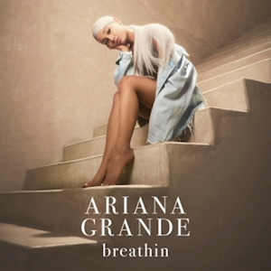
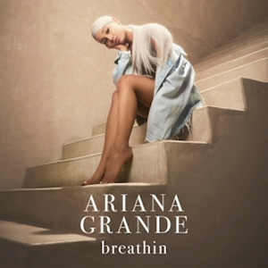

Yours Truly
Release Date
Recorded
Genre
Length
Label
Producer
August 30, 2013
August 2011 - June 2013
Pop, R&B
46:23
Republic
Harmony
Samuels, Kenneth "Babyface" Edmonds, Antonio Dixon, The
Rascals, Tommy Brown, Matt Squire, Rickey "SlikkMuzik" Offord,
Mika, Greg Wells, Jason Nevins
Singles:


Yours Truly is the debut studio album of the American singer. The album was recorded in a span of three years and released through Republic Records. The record incorporates a majority of pop and R&B elements with a mix of 90’s hip hop. Grande took inspiration from previous pop icons who paved the way for her artistry such as Whitney Houston, Amy Winehouse, and Mariah Carey. It debuted at number one on the Billboard 200 making the singer one of a few female artists to debut their first project at the number one spot in the United States. Grande wanted to pay respect and create an album that revolved around the music she grew up listening to as a child. Her taste in “urban pop, 90’s music” motivated her to record an album that was a dedication to old school R&B.


 
